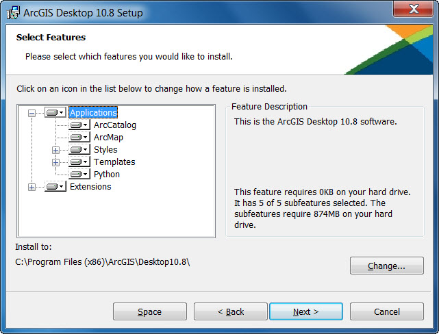

Adding additional installation features
If you did not choose to add extensions or other ArcGIS Desktop features during the initial installation, they can be added later.
 Note:
Note:
- Adding installation features requires access to the original installation source, either the media or the network location.
- The program item listed in Add or Remove Programs is ArcGIS Desktop 10.8.
How to add or remove ArcGIS Desktop installation features
- On Windows Control Panel, click Add or Remove Programs or Programs and Features, depending on your operating system. Select ArcGIS Desktop from the program list and click Change.
- The add/remove process displays the installation dialog box showing the current installation state. You can choose to install features not currently installed (noted with a red X) or remove those features already installed. The add/remove state toggles the current state between installed and unavailable (remove) or unavailable and installed. It is not necessary to select or change the installation state of those features you do not want to affect.

You can install the extensions; however, they only work if a license for the extensions is available on your license manager (for Concurrent Use products) or you have a valid authorization file (for Single Use products).
For Concurrent Use product versions, authorize your extensions with License Server Administrator:
- On the machine where the license manager is installed, open ArcGIS License Server Administrator by clicking All Programs > ArcGIS > License Manager > License Server Administrator.
- Choose Authorization, click Authorize Now, and follow the remaining directions.
For Single Use product versions, authorize your extensions with ArcGIS Administrator:
- On the machine where ArcGIS Desktop is installed, open ArcGIS Administrator by clicking All Programs > ArcGIS > ArcGIS Administrator.
- Choose Desktop, click Authorize Now, and follow the remaining directions.